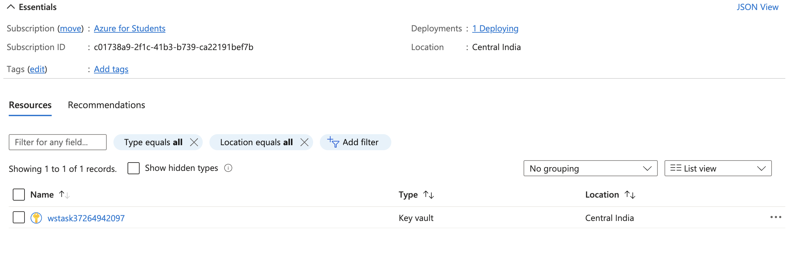
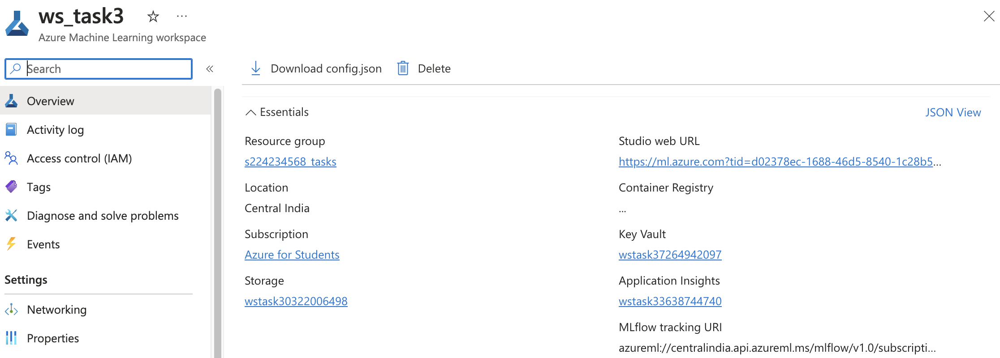
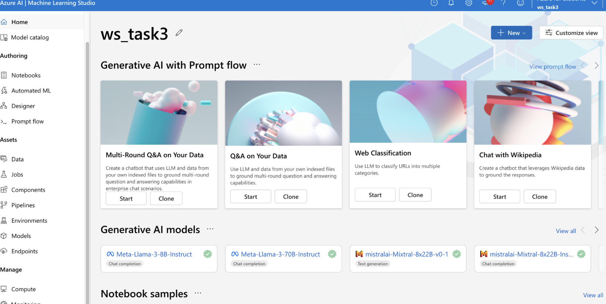
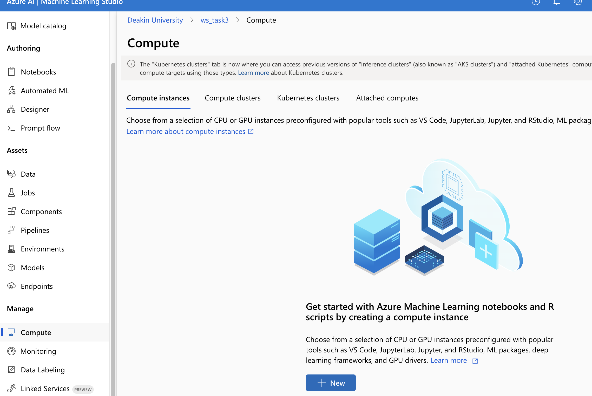
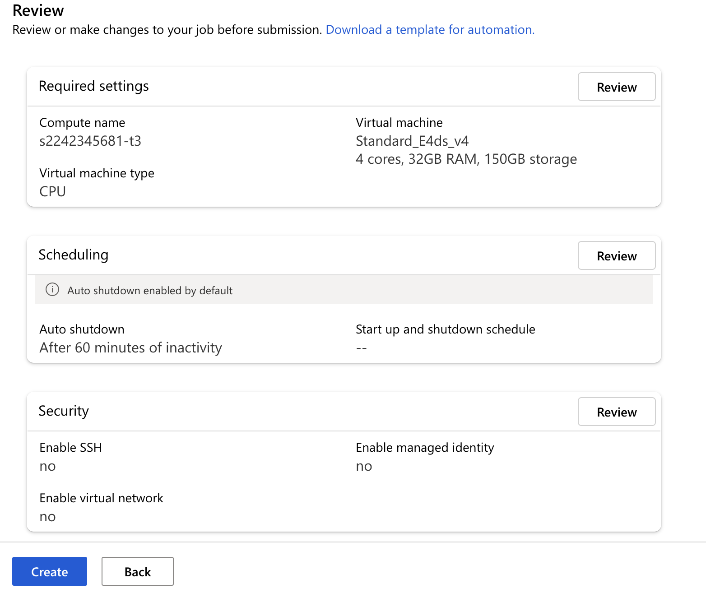
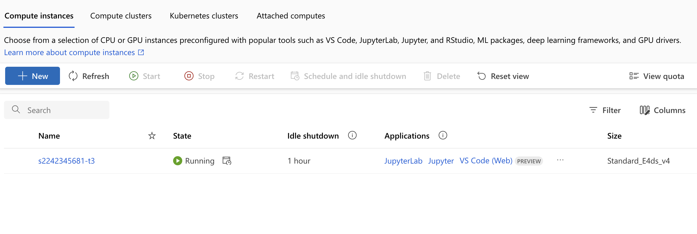
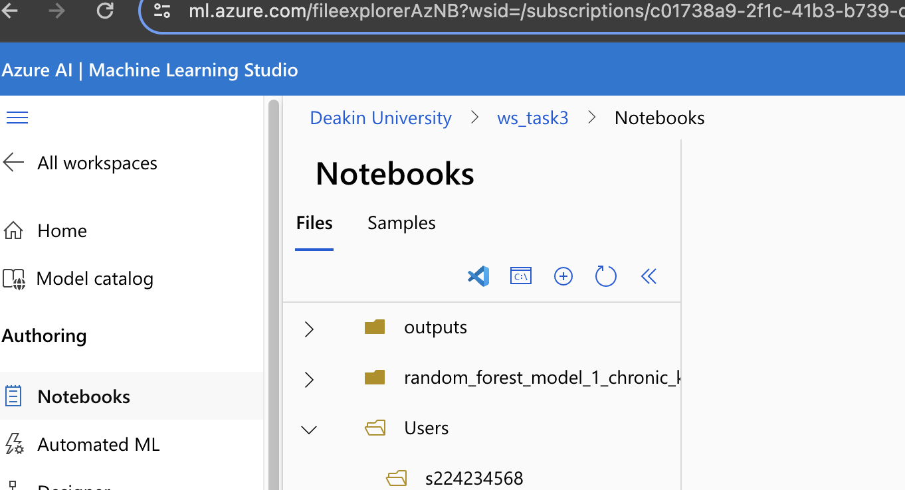
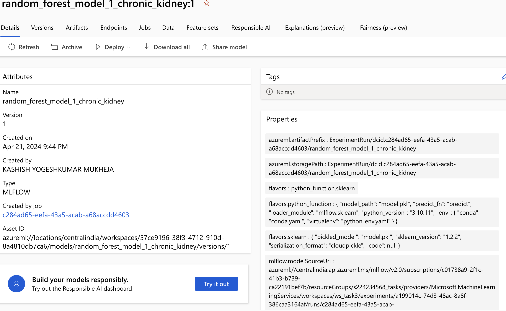
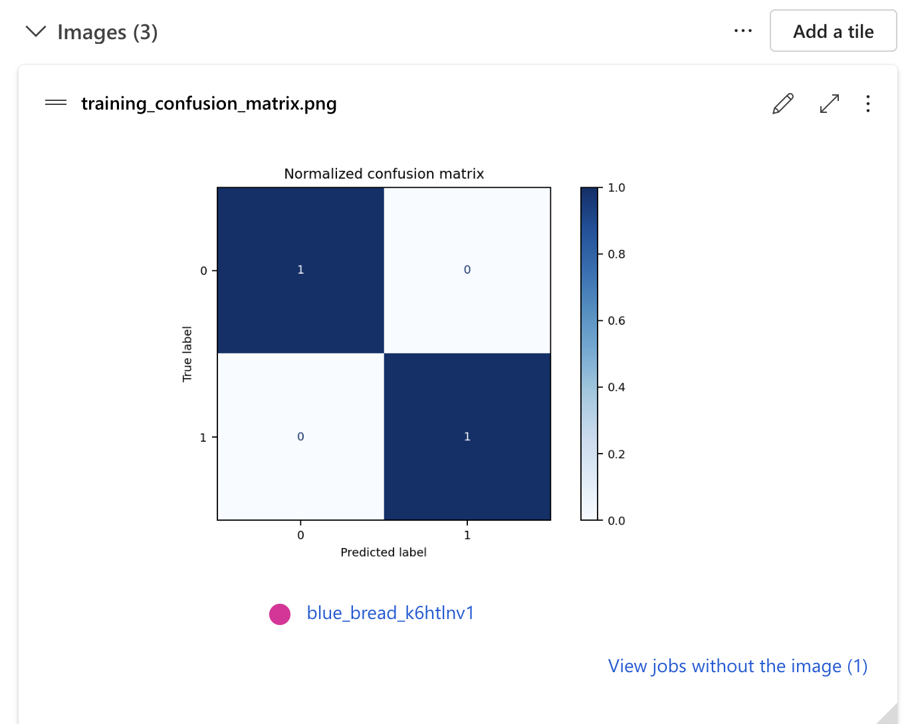
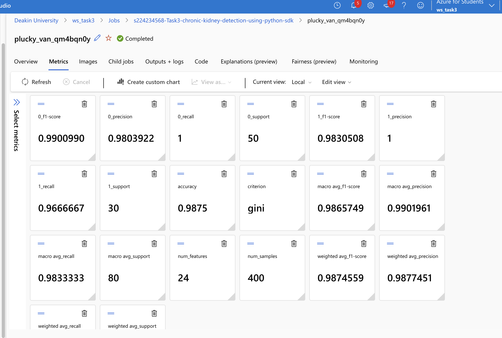

Task 3P: Design and Deploy Model using Azure Machine Learning
blogging
jupyter
Computer Vision
Author
Kashish Mukheja
Published
Invalid Date
Task 3P: Design and Deploy Model using Azure Machine Learning
A Report By:
Name: Kashish Mukheja
Student Id: 224234568
Email: s224234568@deakin.edu.au
PART A
Q1) What is the Azure Machine Learning SDK for Python? What is Workspace? How to create a workspace for machine learning using Azure Portal? You need to log in using your Deakin email to your Azure portal and create a workspace under your resource group. We have created a resource group using a university subscription and you should be able to see your resource group. Provide a screenshot for this part. Create your computing instance and cluster and explain what those parts are. Provide a screenshot of your created computing instance and cluster.
Azure Machine Learning SDK for Python: is a powerful tool offered by Microsoft for developing, training, deploying, and managing machine learning models in the Azure cloud environment. This SDK provides a comprehensive set of functions to streamline the entire machine learning process, from data preparation and model training to deployment and monitoring. Here are some key aspects of the Azure Machine Learning SDK for Python:
Automated Machine Learning (AutoML): The Azure ML SDK includes AutoML capabilities, which automate model selection, feature engineering, and hyperparameter tuning. This feature accelerates the process of prototyping and deploying high-quality machine learning models without requiring extensive manual effort. Experimentation and Versioning: Users can organize their machine learning experiments into projects, run experiments with different setups, and keep track of metrics and results for each run. This ensures that experiments are reproducible and allows for versioning of different model iterations.
Data Management and Preparation: Azure ML SDK provides tools for ingesting, exploring, and preprocessing data. This makes it easier to work with large datasets stored in Azure Data Lake Storage, Azure Blob Storage, or other data sources. Model Training and Deployment: Users can train machine learning models using popular frameworks like TensorFlow, PyTorch, and Scikit-learn. These models can then be deployed as web services or Docker containers to Azure Kubernetes Service (AKS), Azure Container Instances (ACI), or Azure Functions.
Monitoring and Management: Azure ML SDK includes capabilities for monitoring model performance, detecting drift, and retraining models as needed to maintain optimal performance over time.
Scalability and Performance: Azure ML SDK leverages the scalability and performance benefits of Azure infrastructure, allowing users to train and deploy models at scale and optimize resource utilization.
Integration with Azure Services: The SDK seamlessly integrates with various Azure services such as Azure Databricks, Azure Synapse Analytics, Azure DevOps, and Azure Monitor. This integration allows for end-to-end data science workflows and the creation of model deployment pipelines.
What is workspace : Workspace: A workspace in Azure Machine Learning is a foundational resource that allows you to group together related Azure resources for machine learning. It provides a centralized place to work with data, experiments, models, and deployment endpoints. Different tasks can be performed in a workspace such as:
The creation of jobs for model-building training runs.
Assists with pipeline and model training for data management.
Creating a workspace for machine learning using Azure Portal:
Log in to the Azure Portal (using your Deakin email).
Create a Resource Group:

Navigate to Machine Learning service: Use the search bar or the left-hand navigation menu to find “Machine Learning.”
Create a workspace: Click “Create a workspace” and fill in details like subscription, resource group, name, and region. Wait for it to get deployed successfully.

Compute Instance: A compute instance in machine learning refers to a virtual machine (VM) provisioned in the cloud specifically for running compute-intensive tasks related to machine learning workflows. Compute instances provide the necessary computational resources for tasks such as data preprocessing, model training, hyperparameter tuning, and inference.



Once deployed, access the instance from Azure Machine Learning studio by Launching the studio

PART 2
Q2) You need to use Azure Machine Learning Python SDK to train and deploy your best built model (Decision tree or Random Forest) in part 1. To complete this task you need to login to your Azure Portal and create your workspace for machine learning and then train your model (you can use the model you built in week 2 or train a new model using your selected dataset) and then deploy the model on Azure. You need to provide a screenshot of your built workspace, the built model using Python, and how you have deployed the model using Azure Python SDK and dependencies. Every step of the development and deployment should be explained.
Show the code
# Standard library importsimport os # Import os module for working with operating system functionalitiesfrom warnings import filterwarnings # Import filterwarnings for suppressing warnings# External library importsimport pandas as pd # Import Pandas for data manipulation and analysisimport numpy as np # Import Numpy for numerical computingfrom sklearn.impute import KNNImputer # Import KNNImputer for imputing missing values using KNNfrom sklearn.preprocessing import LabelEncoder, StandardScaler # Import LabelEncoder and StandardScaler for preprocessing datafrom sklearn.model_selection import train_test_split # Import train_test_split for splitting data into training and testing setsfrom sklearn.metrics import classification_report # Import classification_report for evaluating model performancefrom sklearn.ensemble import RandomForestClassifier # Import RandomForestClassifier for classification tasks# Azure related importsfrom azure.identity import DefaultAzureCredential # Import DefaultAzureCredential for authenticating Azure servicesfrom azureml.core import Experiment, Workspace # Import Experiment and Workspace from azureml.core for working with Azure MLfrom azure.ai.ml import MLClient # Import MLClient for interacting with Azure ML servicesfrom azure.ai.ml.entities import ManagedOnlineEndpoint, ManagedOnlineDeployment # Import ManagedOnlineEndpoint and ManagedOnlineDeployment for managing online endpoints# MLFlow related importsimport mlflow # Import mlflow for tracking experimentsimport mlflow.sklearn # Import mlflow.sklearn for logging scikit-learn models with MLFlow# Set Git Python Refresh to quiet modeos.environ["GIT_PYTHON_REFRESH"] ="quiet"# Initialize KNNImputer for imputing missing valuesknn_imputer = KNNImputer()# Initialize LabelEncoder and StandardScalerlabel_encoder = LabelEncoder()scaler = StandardScaler()
Chronic Kidney Disease Dataset Overview:
Number of Records: 400
Number of Columns: 25
Brief Information:
The Chronic Kidney Disease dataset consists of 400 records and 25 columns. The dataset contains missing values, denoted as ‘?’.
Column Details:
Age (age): Numerical data in years with missing values.
Blood Pressure (bp): Numerical data in mm/Hg with missing values.
Specific Gravity (sg): Categorical data with unique values (1.005, 1.010, 1.015, 1.020, 1.025) and missing values.
Albumin (al): Categorical data with unique values (0, 1, 2, 3, 4, 5) and missing values.
Sugar (su): Categorical data with unique values (0, 1, 2, 3, 4, 5) and missing values.
Red Blood Cells (rbc): Categorical data with unique values (‘normal’, ‘abnormal’) and missing values.
Pus Cell (pc): Categorical data with unique values (‘normal’, ‘abnormal’) and missing values.
Pus Cell Clumps (pcc): Categorical data with unique values (‘present’, ‘notpresent’) and missing values.
Bacteria (ba): Categorical data with unique values (‘present’, ‘notpresent’) and missing values.
Blood Glucose Random (bgr): Numerical data in mgs/dl with missing values.
Blood Urea (bu): Numerical data in mgs/dl with missing values.
Serum Creatinine (sc): Numerical data in mgs/dl with missing values.
Sodium (sod): Numerical data in mEq/L with missing values.
Potassium (pot): Numerical data in mEq/L with missing values.
Hemoglobin (hemo): Numerical data in gms with missing values.
Packed Cell Volume (pcv): Numerical data with missing values.
White Blood Cell Count (wbcc): Numerical data in cells/cmm with missing values.
Red Blood Cell Count (rbcc): Numerical data in millions/cmm with missing values.
Hypertension (htn): Categorical data with unique values (‘yes’, ‘no’) and missing values.
Diabetes Mellitus (dm): Categorical data with unique values (‘yes’, ‘no’) and missing values.
Coronary Artery Disease (cad): Categorical data with unique values (‘yes’, ‘no’) and missing values.
Appetite (appet): Categorical data with unique values (‘good’, ‘poor’) and missing values.
Pedal Edema (pe): Categorical data with unique values (‘yes’, ‘no’) and missing values.
Anemia (ane): Categorical data with unique values (‘yes’, ‘no’) and missing values.
Class (class): Target class with unique values (‘ckd’, ‘notckd’) and missing values.
Data Preprocessing for Chronic Kidney Disease Dataset in Azure Notebook
Go to Notebooks section on the left pane

Screenshot 2024-04-21 at 10.18.57 PM.png
This section outlines the preprocessing steps performed on the Chronic Kidney Disease dataset to prepare it for analysis and modeling. Below are the key preprocessing steps along with explanations:
1. Reading the Dataset and Selecting Relevant Columns: - The dataset is read from the CSV file, and only the relevant columns are selected using the usecols parameter.
2. Defining Categorical and Numerical Columns: - Categorical columns containing categorical data are listed in categorical_cols. - Numerical columns containing numerical data are listed in numerical_cols.
3. Encoding Non-null Data: - The encode function is defined to encode non-null data in categorical columns using LabelEncoder. - It creates a copy of the DataFrame, drops null values, and applies label encoding.
4. Imputing Null Data: - The impute function is defined to impute null data using KNN imputation (KNNImputer). - For categorical columns, the result is cast to integer type; otherwise, it’s rounded to two decimal places.
5. Feature Engineering Column Names and Handling Missing Values: - Column names containing single quotes are replaced to ensure consistency. - Missing values denoted by ‘?’ are replaced with NaN using replace.
6. Encoding Categorical Columns and Imputing Missing Values: - Categorical columns are encoded using the encode function, and their data type is set to category. - Missing values in all columns are imputed using the impute function.
7. Scaling Numerical Columns: - Numerical columns are scaled using StandardScaler to ensure all features have the same scale. - The scaler is fitted and applied to the numerical columns.
8. Displaying Processed Dataset: - The first few rows of the processed dataset are displayed using the head() function to inspect the changes.
Show the code
# Read the dataset and select relevant columnschronic_kidney_disease_df = pd.read_csv("chronic_kidney_disease.csv", usecols=range(1, 26))# Columns with categorical datacategorical_cols = ["sg", "al", "su", "rbc", "pc", "pcc", "ba", "htn", "dm", "cad", "appet", "pe", "ane", "class"]# Columns with numerical datanumerical_cols = ["age", "bp", "ba", "bgr", "bu", "sc", "sod", "pot", "hemo", "pcv", "wbcc", "rbcc"]# Function to encode non-null datadef encode(data): data_copy = data.copy() # Create a copy of the DataFrame data_no_null = data_copy.dropna().values encoded_data = label_encoder.fit_transform(data_no_null) data_copy.loc[data_copy.notnull()] = encoded_datareturn data_copy# Function to impute null datadef impute(data, col): result = knn_imputer.fit_transform(data)if col in categorical_cols:return result.astype(int)return np.round(result, 2)# Rectify column nameschronic_kidney_disease_df.columns = chronic_kidney_disease_df.columns.str.replace("'", "")# Replace missing values '?' with NaNchronic_kidney_disease_df = chronic_kidney_disease_df.replace("?", np.NaN)# Encode categorical columnsfor col in categorical_cols: chronic_kidney_disease_df[col] = encode(chronic_kidney_disease_df[col]) chronic_kidney_disease_df[col] = chronic_kidney_disease_df[col].astype("category")# Impute missing values for all columnsfor col in chronic_kidney_disease_df.columns: chronic_kidney_disease_df[[col]] = impute(chronic_kidney_disease_df[[col]], col)# Fit and transform the scaler to the numerical columnschronic_kidney_disease_df[numerical_cols] = scaler.fit_transform(chronic_kidney_disease_df[numerical_cols])# Display the first few rows of the processed datasetchronic_kidney_disease_df.head()
age
bp
sg
al
su
rbc
pc
pcc
ba
bgr
...
pcv
wbcc
rbcc
htn
dm
cad
appet
pe
ane
class
0
-0.205459
0.262336
3
1
0
0
1
0
-0.241249
-0.361993
...
0.628470
-0.240518
0.585900
1
1
0
0
0
0
0
1
-2.623805
-1.966582
3
4
0
0
1
0
-0.241249
0.000042
...
-0.108551
-0.954786
0.002055
0
0
0
0
0
0
0
2
0.620318
0.262336
1
2
3
1
1
0
-0.241249
3.681436
...
-0.968408
-0.359563
0.002055
0
1
0
1
0
1
0
3
-0.205459
-0.480637
0
4
0
1
0
1
-0.241249
-0.415548
...
-0.845571
-0.677015
-0.963076
1
0
0
1
1
1
0
4
-0.028507
0.262336
1
2
0
1
1
0
-0.241249
-0.562825
...
-0.477061
-0.438926
-0.129012
0
0
0
0
0
0
0
5 rows × 25 columns
Show the code
# split data into train subset and test subsetX_train, X_test, y_train, y_test = train_test_split( kidney_disease_df.drop(columns="class", axis=1), kidney_disease_df["class"], test_size=0.2, random_state=42, stratify=kidney_disease_df["class"],)
Azure ML Setup
This section encompasses the steps involved in splitting the dataset into training and testing subsets and setting up Azure Machine Learning (Azure ML) for chronic kidney disease detection. Below are the key steps along with explanations:
1. Splitting Data into Training and Testing Subsets: - The dataset is split into training and testing subsets using the train_test_split function from scikit-learn. - X_train and X_test contain the feature variables, while y_train and y_test contain the target variable. - The split ratio is set to 80% for training and 20% for testing, with stratification based on the target variable to maintain class distribution.
2. Authenticating Azure Credentials and Initializing ML Client: - Azure credentials are authenticated using the DefaultAzureCredential. - An instance of MLClient is initialized with Azure credentials and workspace details. - Subscription ID, resource group name, and workspace name are provided for Azure configuration.
3. Loading Workspace Configuration: - Workspace configuration is loaded from the config.json file using Workspace.from_config. - This ensures connectivity to the Azure ML workspace.
4. Defining Experiment: - An experiment is defined within the Azure ML workspace using Experiment. - The experiment is named “s224234568-Task3-chronic-kidney-detection-using-python-sdk”.
Show the code
# Split data into training and testing subsetsX_train, X_test, y_train, y_test = train_test_split( chronic_kidney_disease_df.drop(columns="class", axis=1), chronic_kidney_disease_df["class"], test_size=0.2, random_state=42, stratify=chronic_kidney_disease_df["class"])# Authenticate Azurecredential = DefaultAzureCredential()# Initialize MLClient with Azure credentials and workspace detailsml_client = MLClient( credential=credential, subscription_id="c01738a9-2f1c-41b3-b739-ca22191bef7b", resource_group_name="s224234568_tasks", workspace_name="ws_task3")# Load workspace configurationws = Workspace.from_config("config.json")# Define experimentexperiment = Experiment( workspace=ws, name="s224234568-Task3-chronic-kidney-detection-using-python-sdk")# Display experimentexperiment
# Set experiment name for loggingmlflow.set_experiment( experiment_name="s224234568-Task3-chronic-kidney-detection-using-python-sdk")# Enable autologging with MLflow for sklearnmlflow.sklearn.autolog()
Model Training Registring the Model through MLflow
This section describes the process of training a machine learning model for chronic kidney disease detection and logging the experiment metrics using MLflow. Below are the key steps along with explanations:
1. Starting MLflow Run: - MLflow run is initiated using mlflow.start_run() to track the experiment’s execution.
2. Initializing Random Forest Classifier: - A Random Forest Classifier is initialized with specific hyperparameters (criterion, max_depth, n_estimators, random_state).
3. Logging Dataset Metrics: - Metrics related to the dataset are logged, including the number of samples, number of features, and criterion used for model evaluation.
4. Model Training and Prediction: - The Random Forest Classifier is trained on the training data (X_train, y_train), and predictions are made on the test data (X_test). - The classification report containing evaluation metrics is printed to assess the model’s performance.
5. Logging Classification Report Metrics: - Classification report metrics such as accuracy, precision, recall, and F1-score are logged for evaluation.
6. Registering the Model via MLflow: - The trained Random Forest model is registered with MLflow using mlflow.sklearn.log_model. - The model is given a name (“random_forest_model_1_chronic_kidney”) and saved to the specified artifact path.
7. Saving the Model to a File: - The trained model is saved to a file using mlflow.sklearn.save_model.
8. Completing MLflow Run: - MLflow run is completed, and resources are released using run.complete() and mlflow.end_run().
Show the code
# Start MLflow runmlflow.start_run()run = experiment.start_logging()# Initialize Random Forest Classifierrandom_forest_classifier = RandomForestClassifier( criterion="gini", max_depth=7, n_estimators=24, random_state=1)# Log dataset metricsrun.log("num_samples", chronic_kidney_disease_df.shape[0])run.log("num_features", chronic_kidney_disease_df.shape[1] -1)run.log("criterion", "gini")# Train the modelrandom_forest = random_forest_classifier.fit(X_train, y_train)y_pred = random_forest.predict(X_test)# Print classification reportprint("\nClassification Matrix:\n", classification_report(y_test, y_pred))# Log classification report metricscr = classification_report(y_test, y_pred, output_dict=True)run.log("accuracy", cr.pop("accuracy"))for class_or_avg, metrics_dict in cr.items():for metric, value in metrics_dict.items(): run.log(class_or_avg +"_"+ metric, value)# Register the model via MLFlowmodel_name ="random_forest_model_1_chronic_kidney"print("Registering the model now through MLFlow")mlflow.sklearn.log_model( sk_model=random_forest_classifier, registered_model_name=model_name, artifact_path=model_name,)# Save the model to a filemlflow.sklearn.save_model( sk_model=random_forest_classifier, path=os.path.join(model_name, "trained_model"),)# Complete MLflow runrun.complete()mlflow.end_run()
2024/04/21 16:14:21 WARNING mlflow.utils.autologging_utils: MLflow autologging encountered a warning: "/anaconda/envs/azureml_py310_sdkv2/lib/python3.10/site-packages/mlflow/data/pandas_dataset.py:116: UserWarning: Hint: Inferred schema contains integer column(s). Integer columns in Python cannot represent missing values. If your input data contains missing values at inference time, it will be encoded as floats and will cause a schema enforcement error. The best way to avoid this problem is to infer the model schema based on a realistic data sample (training dataset) that includes missing values. Alternatively, you can declare integer columns as doubles (float64) whenever these columns may have missing values. See `Handling Integers With Missing Values <https://www.mlflow.org/docs/latest/models.html#handling-integers-with-missing-values>`_ for more details."
2024/04/21 16:14:25 WARNING mlflow.utils.autologging_utils: MLflow autologging encountered a warning: "/anaconda/envs/azureml_py310_sdkv2/lib/python3.10/site-packages/mlflow/models/signature.py:144: UserWarning: Hint: Inferred schema contains integer column(s). Integer columns in Python cannot represent missing values. If your input data contains missing values at inference time, it will be encoded as floats and will cause a schema enforcement error. The best way to avoid this problem is to infer the model schema based on a realistic data sample (training dataset) that includes missing values. Alternatively, you can declare integer columns as doubles (float64) whenever these columns may have missing values. See `Handling Integers With Missing Values <https://www.mlflow.org/docs/latest/models.html#handling-integers-with-missing-values>`_ for more details."
2024/04/21 16:14:28 WARNING mlflow.utils.autologging_utils: MLflow autologging encountered a warning: "/anaconda/envs/azureml_py310_sdkv2/lib/python3.10/site-packages/_distutils_hack/__init__.py:33: UserWarning: Setuptools is replacing distutils."
2024/04/21 16:14:31 WARNING mlflow.utils.autologging_utils: MLflow autologging encountered a warning: "/anaconda/envs/azureml_py310_sdkv2/lib/python3.10/site-packages/mlflow/data/pandas_dataset.py:116: UserWarning: Hint: Inferred schema contains integer column(s). Integer columns in Python cannot represent missing values. If your input data contains missing values at inference time, it will be encoded as floats and will cause a schema enforcement error. The best way to avoid this problem is to infer the model schema based on a realistic data sample (training dataset) that includes missing values. Alternatively, you can declare integer columns as doubles (float64) whenever these columns may have missing values. See `Handling Integers With Missing Values <https://www.mlflow.org/docs/latest/models.html#handling-integers-with-missing-values>`_ for more details."
2024/04/21 16:14:31 WARNING mlflow.sklearn: Failed to log evaluation dataset information to MLflow Tracking. Reason: BAD_REQUEST: Response: {'Error': {'Code': 'UserError', 'Severity': None, 'Message': 'Cannot log the same dataset with different context', 'MessageFormat': None, 'MessageParameters': None, 'ReferenceCode': None, 'DetailsUri': None, 'Target': None, 'Details': [], 'InnerError': None, 'DebugInfo': None, 'AdditionalInfo': None}, 'Correlation': {'operation': '8fb73775d4501789eccb205ccbcfc949', 'request': 'dd3e607f23602c93'}, 'Environment': 'centralindia', 'Location': 'centralindia', 'Time': '2024-04-21T16:14:31.9695178+00:00', 'ComponentName': 'mlflow', 'statusCode': 400, 'error_code': 'BAD_REQUEST'}
Successfully registered model 'random_forest_model_1_chronic_kidney'.
2024/04/21 16:14:35 INFO mlflow.tracking._model_registry.client: Waiting up to 300 seconds for model version to finish creation. Model name: random_forest_model_1_chronic_kidney, version 1
Created version '1' of model 'random_forest_model_1_chronic_kidney'.
Classification Matrix:
precision recall f1-score support
0 0.98 1.00 0.99 50
1 1.00 0.97 0.98 30
accuracy 0.99 80
macro avg 0.99 0.98 0.99 80
weighted avg 0.99 0.99 0.99 80
Registering the model now through MLFlow
The classification report summarizes the model’s performance in predicting chronic kidney disease:
Precision: High for both classes, indicating few false positives.
Recall: Generally high, indicating good coverage of actual positive cases.
F1-score: Balanced measure of precision and recall.
Accuracy: Overall high accuracy of 99%.
In summary, the model demonstrates excellent performance in identifying chronic kidney disease cases.
Model Look in Azure

Screenshot 2024-04-21 at 10.26.23 PM.png
Model metrics Inside Azure portal inside jobs section

Screenshot 2024-04-21 at 10.12.53 PM.png

Screenshot 2024-04-21 at 10.13.53 PM.png
Endpoint Creation
Endpoint Creation and Model Deployment for Chronic Kidney Disease Detection
In this section, the process of creating an endpoint and deploying a machine learning model for chronic kidney disease detection is detailed. Here’s an overview of the steps and their explanation:
1. Generating Endpoint Name: - A random suffix of alphanumeric characters is generated to ensure a unique endpoint name within Azure limits. - The prefix “ckd-endpoint-” is appended to the suffix to form the endpoint name.
2. Defining Online Endpoint: - An online endpoint is defined with the generated name and a clear description highlighting its purpose. - Authentication mode is set to “key”, indicating that access to the endpoint requires an API key. - Tags are added to provide metadata, such as the training dataset used.
3. Creating the Online Endpoint: - The defined online endpoint is created using ml_client.online_endpoints.begin_create_or_update. - This operation is expected to take approximately 2 minutes.
4. Retrieving Endpoint Information: - The created online endpoint is retrieved using its name to confirm its provisioning state. - Information about the retrieved endpoint, including its name and provisioning state, is printed for verification.
5. Retrieving the Registered Model: - The name of the registered model for deployment (“random_forest_model_1_chronic_kidney”) is defined. - The latest version of the registered model is retrieved using ml_client.models.list.
6. Deploying the Model: - An online deployment configuration (“blue”) is defined, specifying the endpoint name, model, instance type, and instance count. - The online deployment is created or updated using ml_client.online_deployments.begin_create_or_update. - This operation deploys the model to the specified endpoint.
7. Assigning Traffic to the Deployment: - Traffic is assigned to the blue deployment, indicating that it receives 100% of the requests. - This is achieved by updating the traffic distribution for the endpoint using ml_client.online_endpoints.begin_create_or_update.
Show the code
import randomimport string# Generate a random string for the endpoint namerandom_suffix =''.join(random.choices(string.ascii_lowercase + string.digits, k=5)) # Adjusted length to fit within limitsonline_endpoint_name ="ckd-endpoint-"+ random_suffix # Adjusted prefix to fit within limits# Define an online endpoint with a clear descriptionendpoint = ManagedOnlineEndpoint( name=online_endpoint_name, description="Endpoint for detecting chronic kidney disease using machine learning model", auth_mode="key", tags={"training_dataset": "kidney_defaults", },)# Create the online endpoint# Expect the endpoint creation to take approximately 2 minutes.endpoint = ml_client.online_endpoints.begin_create_or_update(endpoint).result()
Show the code
# Retrieve the online endpointendpoint = ml_client.online_endpoints.get(name=online_endpoint_name)# Print information about the retrieved endpointprint(f'Endpoint "{endpoint.name}" with provisioning state "{endpoint.provisioning_state}" is retrieved')# Define the name of the registered modelregistered_model_name ="random_forest_model_1_chronic_kidney"# Retrieve the latest version of the modelmodel_versions = ml_client.models.list(name=registered_model_name)latest_model_version =max([int(m.version) for m in model_versions])latest_model_version
Endpoint "ckd-endpoint-d17o6" with provisioning state "Succeeded" is retrieved
1
Show the code
# Retrieve the latest version of the registered modelmodel_name ="random_forest_model_1_chronic_kidney"latest_model_version =max([int(m.version) for m in ml_client.models.list(name=model_name)])# Retrieve the registered model for deploymentmodel = ml_client.models.get(name=model_name, version=latest_model_version)# Define the configuration for the online deploymentonline_blue_deployment = ManagedOnlineDeployment( name="blue", endpoint_name=online_endpoint_name, model=model, instance_type="Standard_F4s_v2", instance_count=1,)# Create or update the online deploymentblue_deployment = ml_client.online_deployments.begin_create_or_update(online_blue_deployment).result()# Assign 100% traffic to the blue deploymentendpoint.traffic = {"blue": 100}ml_client.online_endpoints.begin_create_or_update(endpoint).result()
Check: endpoint ckd-endpoint-d17o6 exists
Readonly attribute principal_id will be ignored in class <class 'azure.ai.ml._restclient.v2022_05_01.models._models_py3.ManagedServiceIdentity'>
Readonly attribute tenant_id will be ignored in class <class 'azure.ai.ml._restclient.v2022_05_01.models._models_py3.ManagedServiceIdentity'>
# Retrieve metadata for the endpointendpoint = ml_client.online_endpoints.get(name=online_endpoint_name)# Print selected metadata about the endpointprint(f"Name: {endpoint.name}\nStatus: {endpoint.provisioning_state}\nDescription: {endpoint.description}")# Print existing traffic detailsprint("Traffic:", endpoint.traffic)# Get the scoring URIprint("Scoring URI:", endpoint.scoring_uri)
Name: ckd-endpoint-d17o6
Status: Succeeded
Description: Endpoint for detecting chronic kidney disease using machine learning model
Traffic: {'blue': 100}
Scoring URI: https://ckd-endpoint-d17o6.centralindia.inference.ml.azure.com/score
Summary:
The provided code demonstrates the end-to-end process of deploying a machine learning model for chronic kidney disease detection using Azure ML. Here’s a brief conclusion summarizing the key points:
Data Processing and Model Training:
The dataset is preprocessed to handle missing values, encode categorical features, and scale numerical features.
A Random Forest classifier is trained on the processed data to predict chronic kidney disease.
MLflow Logging:
MLflow is utilized to log dataset metrics, model performance metrics, and to register and save the trained model.
Endpoint Creation and Model Deployment:
An online endpoint is created with a clear description, and a unique name is generated for it.
The trained model is deployed to the endpoint, allowing real-time inference on new data.
Endpoint Metadata Retrieval:
Metadata about the deployed endpoint, such as name, provisioning state, description, traffic details, and scoring URI, is retrieved and printed.
References
olympus.mygreatlearning.com. (n.d.). Greatlearning login. [online] Available at: https://olympus.mygreatlearning.com.